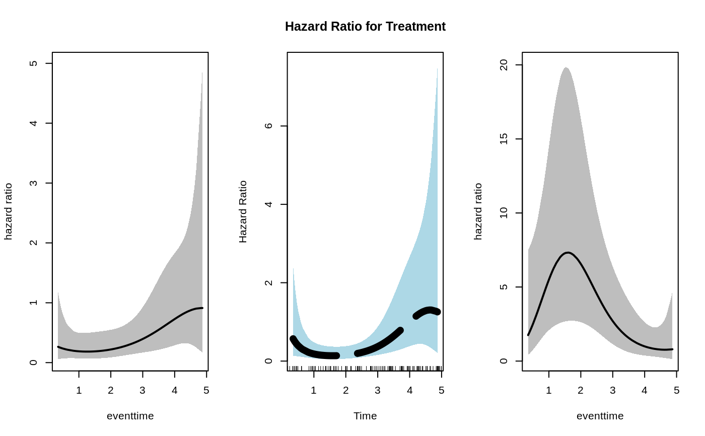

R/plotHazardRatio.R, R/plot_methods.R, R/utils.R
plot.singleEventCB.RdPlot method for objects returned by the fitSmoothHazard
function. Current plot types are hazard function and hazard ratio. The
visreg package must be installed for type="hazard". This
function accounts for the possible time-varying exposure effects.
plotHazardRatio(x, newdata, newdata2, ci, ci.lvl, ci.col, rug, xvar, ...)
# S3 method for singleEventCB
plot(
x,
...,
type = c("hazard", "hr"),
hazard.params = list(),
newdata,
exposed,
increment = 1,
var,
xvar = NULL,
ci = FALSE,
ci.lvl = 0.95,
rug = !ci,
ci.col = "grey"
)
incrVar(var, increment = 1)Fitted object of class glm, gam, cv.glmnet or gbm. This is
the result from the fitSmoothHazard() function.
Required for type="hr". The newdata argument is
the "unexposed" group, while the exposed group is defined by either: (i) a
change (defined by the increment argument) in a variable in newdata
defined by the var argument ; or (ii) an exposed function that takes
a data-frame and returns the "exposed" group (e.g. exposed =
function(data) transform(data, treat=1)). This is a generalization of the
behavior of the rstpm2 plot function. It allows both numeric and factor
variables to be incremented or decremented. See references for rstpm2
package. Only used for type="hr"
data.frame for exposed group. calculated and passed
internally to plotHazardRatio function
Logical; if TRUE confidence bands are calculated. Only available
for family="glm" and family="gam", and only used for type="hr",
Default: !add. Confidence intervals for hazard ratios are calculated using
the Delta Method.
Confidence level. Must be in (0,1), Default: 0.95. Only used
for type="hr".
Confidence band color. Only used if argument ci=TRUE,
Default: 'grey'. Only used for type="hr".
Logical. Adds a rug representation (1-d plot) of the event times
(only for status=1), Default: !ci. Only used for type="hr".
Variable to be used on x-axis for hazard ratio plots. If NULL,
the function defaults to using the time variable used in the call to
fitSmoothHazard. In general, this should be any continuous variable
which has an interaction term with another variable. Only used for
type="hr".
further arguments passed to plot. Only used if type="hr".
Any of lwd,lty,col,pch,cex will be applied to the hazard ratio
line, or point (if only one time point is supplied to newdata).
plot type. Choose one of either "hazard" for hazard
function or "hr" for hazard ratio. Default: type = "hazard".
Named list of arguments which will override the defaults
passed to visreg::visreg(), The default arguments are list(fit = x,
trans = exp, plot = TRUE, rug = FALSE, alpha = 1, partial = FALSE, overlay
= TRUE). For example, if you want a 95% confidence band, specify
hazard.params = list(alpha = 0.05). Note that The cond argument
must be provided as a named list. Each element of that list specifies the
value for one of the terms in the model; any elements left unspecified are
filled in with the median/most common category. Only used for
type="hazard". All other argument are used for type="hr". Note that the
visreg package must be installed for type="hazard".
function that takes newdata and returns the exposed
dataset (e.g. function(data) transform(data, treat = 1)). This argument
takes precedence over the var argument, i.e., if both var and
exposed are correctly specified, only the exposed argument
will be used. Only used for type="hr".
Numeric value indicating how much to increment (if positive)
or decrement (if negative) the var variable in newdata. See
var argument for more details. Default is 1. Only used for
type="hr".
specify the variable name for the exposed/unexposed (name is given
as a character variable). If this argument is missing, then the
exposed argument must be specified. This is the variable which will
be incremented by the increment argument to give the exposed
category. If var is coded as a factor variable, then
increment=1 will return the next level of the variable in
newdata. increment=2 will return two levels above, and so on.
If the value supplied to increment is greater than the number of
levels, this will simply return the max level. You can also decrement the
categorical variable by specifying a negative value, e.g.,
increment=-1 will return one level lower than the value in
newdata. If var is a numeric, than increment will
increment (if positive) or decrement (if negative) by the supplied value.
Only used for type="hr".
a plot of the hazard function or hazard ratio. For type="hazard", a
data.frame (returned invisibly) of the original data used in the fitting
along with the data used to create the plots including predictedhazard
which is the predicted hazard for a given covariate pattern and time.
predictedloghazard is the predicted hazard on the log scale. lowerbound
and upperbound are the lower and upper confidence interval bounds on the
hazard scale (i.e. used to plot the confidence bands). standarderror is
the standard error of the log hazard or log hazard ratio (only if
family="glm" or family="gam"). For type="hr", log_hazard_ratio and
hazard_ratio is returned, and if ci=TRUE, standarderror (on the log
scale) and lowerbound and upperbound of the hazard_ratio are
returned.
This function has only been thoroughly tested for family="glm". If
the user wants more customized plot aesthetics, we recommend saving the
results to a data.frame and using the graphical package of their choice.
Mark Clements and Xing-Rong Liu (2019). rstpm2: Smooth Survival Models, Including Generalized Survival Models. R package version 1.5.1. https://CRAN.R-project.org/package=rstpm2
Breheny P and Burchett W (2017). Visualization of Regression Models Using visreg. The R Journal, 9: 56-71.
if (requireNamespace("splines", quietly = TRUE)) {
data("simdat") # from casebase package
library(splines)
simdat <- transform(simdat[sample(1:nrow(simdat), size = 200),],
treat = factor(trt, levels = 0:1,
labels = c("control","treatment")))
fit_numeric_exposure <- fitSmoothHazard(status ~ trt*bs(eventtime),
data = simdat,
ratio = 1,
time = "eventtime")
fit_factor_exposure <- fitSmoothHazard(status ~ treat*bs(eventtime),
data = simdat,
ratio = 1,
time = "eventtime")
newtime <- quantile(fit_factor_exposure[["data"]][[fit_factor_exposure[["timeVar"]]]],
probs = seq(0.05, 0.95, 0.01))
par(mfrow = c(1,3))
plot(fit_numeric_exposure,
type = "hr",
newdata = data.frame(trt = 0, eventtime = newtime),
exposed = function(data) transform(data, trt = 1),
xvar = "eventtime",
ci = TRUE)
#by default this will increment `var` by 1 for exposed category
plot(fit_factor_exposure,
type = "hr",
newdata = data.frame(treat = factor("control",
levels = c("control","treatment")), eventtime = newtime),
var = "treat",
increment = 1,
xvar = "eventtime",
ci = TRUE,
ci.col = "lightblue",
xlab = "Time",
main = "Hazard Ratio for Treatment",
ylab = "Hazard Ratio",
lty = 5,
lwd = 7,
rug = TRUE)
# we can also decrement `var` by 1 to give hazard ratio for control/treatment
result <- plot(fit_factor_exposure,
type = "hr",
newdata = data.frame(treat = factor("treatment",
levels = c("control","treatment")),
eventtime = newtime),
var = "treat",
increment = -1,
xvar = "eventtime",
ci = TRUE)
# see data used to create plot
head(result)
}

#> treat eventtime log_hazard_ratio standarderror hazard_ratio lowerbound
#> 5% treatment 0.3488444 0.5617254 0.7422200 1.753696 0.4094260
#> 6% treatment 0.3902785 0.6649501 0.7012281 1.944394 0.4919237
#> 7% treatment 0.4148271 0.7239973 0.6788513 2.062662 0.5452413
#> 8% treatment 0.4512202 0.8086798 0.6482910 2.244942 0.6300556
#> 9% treatment 0.4636149 0.8367497 0.6385929 2.308850 0.6604266
#> 10% treatment 0.4862850 0.8870854 0.6217826 2.428043 0.7177844
#> upperbound
#> 5% 7.511610
#> 6% 7.685473
#> 7% 7.803102
#> 8% 7.998922
#> 9% 8.071737
#> 10% 8.213317